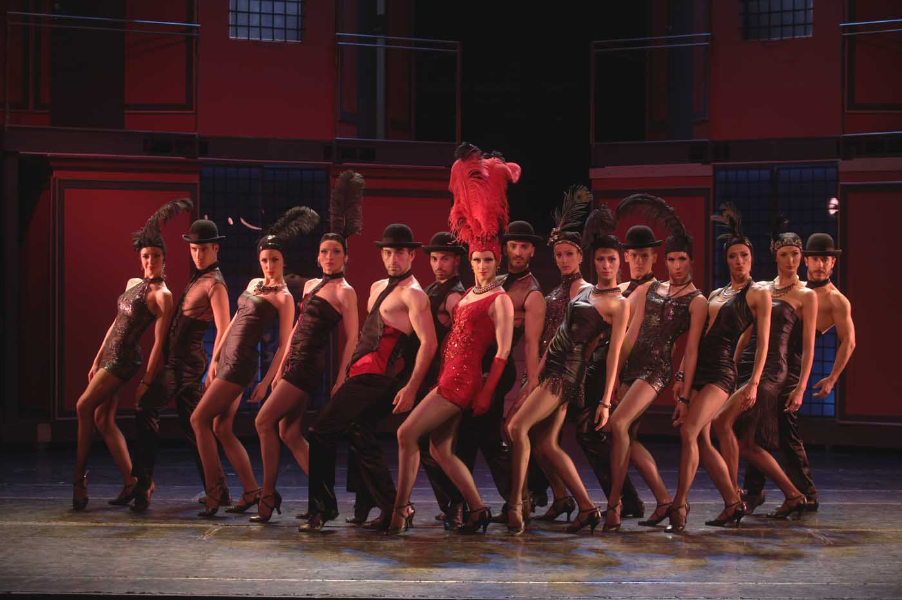
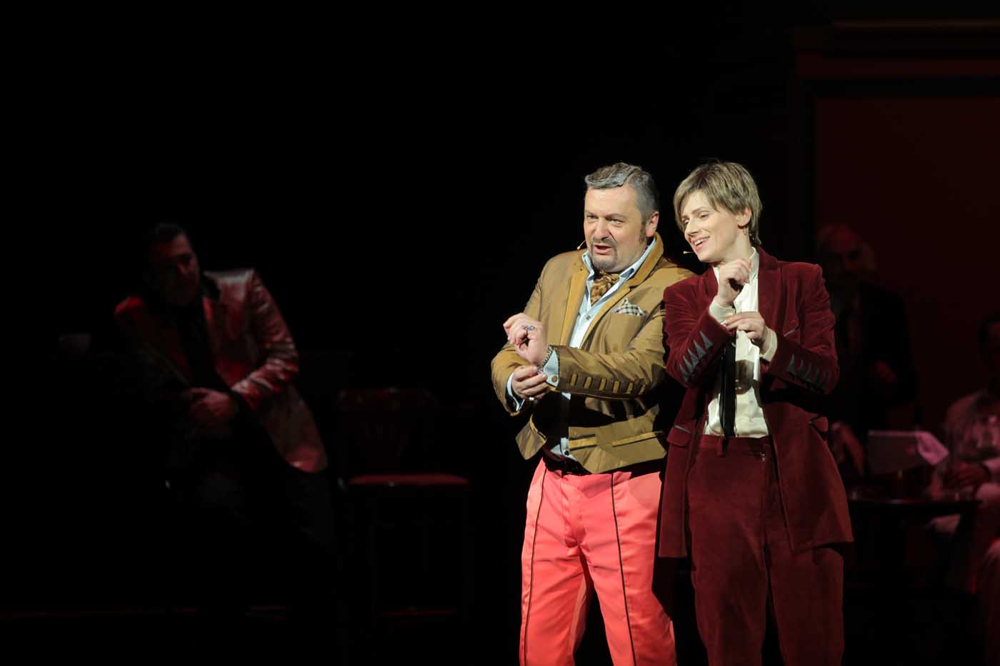
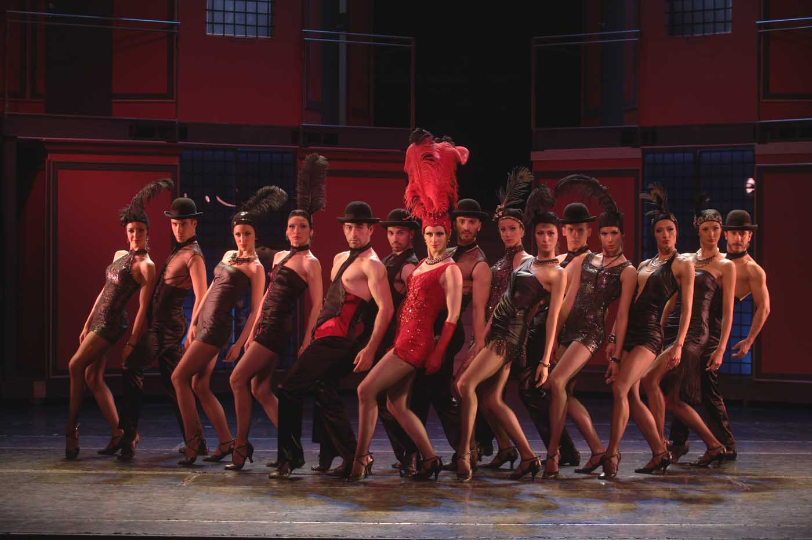
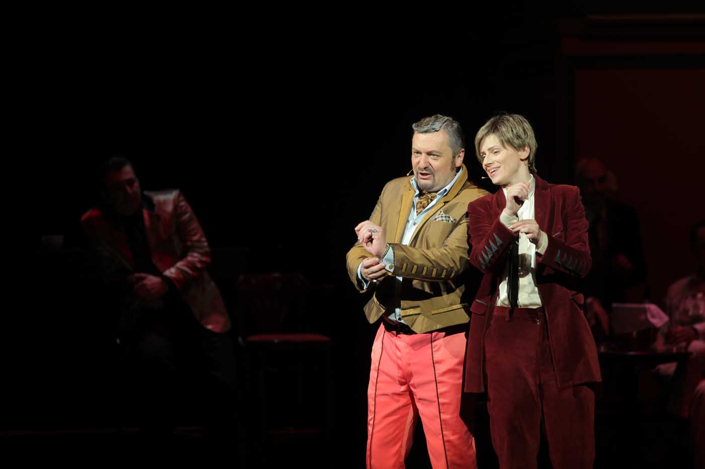

Виктoр и Викторија
 



Најчешћа асоцијација у вези са мјузиклом „Виктор Викторија“ јесте ТВ филм Блејка Едвардса (Blake Edwards) из 1982. године. Едвардс је и аутор сценарија за овај познати фим у коме су главне улоге тумачили Џули Ендрјус (Julie Anrews) и Џејмс Гарнер (James Garner). С обзиром на то да је композитор Хенри Мансини (Henry Mancini) умро пре него што је представа била готова, музику је довршио Френк Вајлдхорн (Frank Wildhorn). Филм је награђен наградама Златни глобус, Оскар, Цезар и постигао је планетарни успех.
Међутим, ова необична прича о женском сопрану који проналази посао имитирајући мушкарца, што јој потом компликује живот, први пут се појавила у немачкој филмској комедији из 1933. године под именом „Виктор унд Викториа“ са Ренатом Милер (Renate Muller), Херманом Тимигом (Hermann Thimig) и Фриделом Писетом (Friedel Pisseta) у главним улогама. Занимљиво је да је идеја за ову причу потекла од Рејнхолда Шунцела (Reinhold Schünzel), америчког глумца и редитеља рођеног у Немачкој, који је током тридесетих година радио у Берлину, без обзира на своје јеврејско порекло.
Бродвејска премијера мјузикла „Виктор Викторија“ одржана је 25. октобра 1995. године у Маркус театру, у режији Блејка Едвардса, и кореографији Роба Маршала (Rob Marshall). У оригиналној подели поред Џули Ендрјус и Тонија Робертса (Tony Roberts) били су и Мајкл Нури (Michael Nouri), Рејчел Јорк (Rachel York,), Ричард Б. Шул (Richard B. Shull), Роб Ашфорд (Rob Ashford) и Мајкл Крајп (Michael Cripe). До 1997. године, мјузикл је имао 734 извођења и 25 такозваних привјуа, претпремијерних играња која Бродвеј практикује пре сваке премијере. Током четворонедељног одмора Џули Ендрјус 1997. године, њену улогу је тумачила Лајза Минели (Liza Minnelli).
Одбијање Џули Ендрјус да прими награду Тони, у знак протеста зато што је од свих аутора и учесника једино она била номинована за ову престижну награду, значајано увећало продају карата и популарност овог мјузикла на Бродвеју.
Мјузикл “Виктор Викторија” је од 2012. године поново на лондонској сцени у Southwark Playhouse театру.
Разлози због којих се данас и овде изводи мјузикл „Виктор Викторија“ су бројни. Најпре, реч је о једном од најпознатијих бродвејских наслова и Позориште на Теразијама овим репертоарским потезом потврђује да су сви његови ансамбли, са посебнима акцентом на глумачки, способни да изађу на крај са најзахтевнијим задацима које мјузикл намеће.
Оно на чему се базира ова наша, прва поставка „Виктор Викторије“ у домаћем позоришту јесте благо померање у времену. Најпре, савремена интерпретација ове приче о певачици која постиже успех у свом послу претварајући се да је мушкарац, полази од тога да не постоји ништа необично у некој врсти прерушавања, замене полова и слично, што је можда било у време када се овај мјузикл појавио. Шта више, данас би то била површна интерпретација једне много садржајније приче о љубави која своје корене има у историји позоришта и то на највишем нивоу. Драмски предложак мјузикла „Виктор Викторија“ најсличнији је Шекспировом „Млетачком трговцу“. Као што је у овој комедији лик Порције мушкарац који се прерушава у жену, која се прерушава у мушкарца, тако је улога Викторије исписивање истог круга у другом смеру – Викторија је жена која се претвара да је мушкарац који се претвара да је жена.
Премијера представе „Виктор Викторија“ истовремено је још једна корак ка учвршћивању трајне репертоарске политике Позоришта на Теразијама, као куће која поред неговања домаћег мјузикла, истрајава на такозваном гвозденом бродвејском репертоару коме „Виктор Викторија“ несумњиво припада.